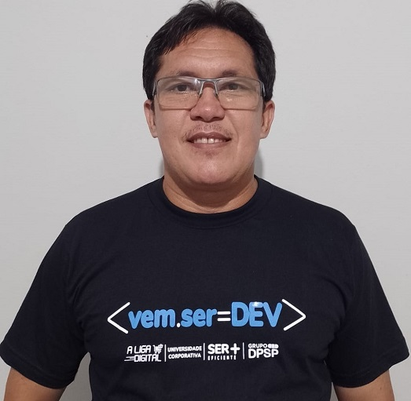
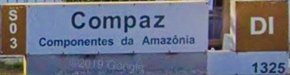

 Boni Seixas
Boni Seixas
Contatos
Rua Joaquim Goulardins, 373, Jardim Santo Adré, São João da Boa Vista/SP
bonisousa@live.com
(19) 97139-5429
Redes Socias
@boniseixas
Boni Seixas
Bonifácio Seixas de Sousa
Iniciando no desenvolvimento de software
Resumo
Engenheiro de Segurança do Trabalho, migrando para área de Tecnologia da Informação, especificamente na área de Desenvolvimento de Software.
Para realizar a migração de profissão, além de iniciar a graduação em Análise e Desenvolvimento de Sistema, busco conhecimento pra área de Tecnologia da Informação, através dos seguintes cursos que fiz e/ou estou cursando:
- Fullstack Developer - Programa #Vem.Ser.Dev - A liga digital e Grupo DPSP
- Estrutura de dados e algorítmo
- Lógica de programação
- Bootcamp Fullstack Developer - Digital Innovation One (DIO)
- Testador de Software
- Testes de aplicações modernas com Cypress
Conhecimento em HTML, CSS e JavaScript e também nas seguintes ferramentas: Cypress; Postman; Postgresql 12 e pgAdmin; Heroku CLI; VS Code; Git e GitHub.
Os estudos me proporcionaram conhecimento teórico, das linguagens e ferramentas acima, preparando-me para me tornar um profissional da área de Desenvolvimento.
Formação Acadêmica
- Graduação em Análise e Desenvolvimento de Sistemas pela UNIFEOB – início 8/2021
- Especialização em Ergonomia: Produto e Processo na Bio Cursos – em 2020
- Especialização em Engenharia de Segurança do Trabalho em 2014 pela UNINORTE
- Graduado em Engenharia de Produção Mecânica em 2013 pela UNIP
Histórico Profissional
 Amazon Aço Indústria e Comércio Ltda, de Abr/2015 a Out/2019, sendo:
Amazon Aço Indústria e Comércio Ltda, de Abr/2015 a Out/2019, sendo:Ago/2017 a Out/2019 como Engenheiro de Segurança do Trabalho; e
Abr/2015 a Ago/2017 como Planejador de Manutenção.
Moto Honda da Amazônia Ltda, de Mai/2012 a Nov/2013 como Estagiário de Engenharia.
Moto Honda da Amazônia Ltda, de Set/2006 a Dez/2011, sendo:
Out/2007 a Dez/2011 como Oficial de Produção; e
Set/2006 a Set/2007 como Auxiliar de Produção.
Out/2007 a Dez/2011 como Oficial de Produção; e
Set/2006 a Set/2007 como Auxiliar de Produção.

Compaz Componentes da Amazônia S/A, de Jan/2005 a Ago/2006, sendo:
Set/2005 a Ago/2006 como Alimentador de Materiais; e
Jan/2005 a Ago/2005 como Auxiliar de Manufatura.
Set/2005 a Ago/2006 como Alimentador de Materiais; e
Jan/2005 a Ago/2005 como Auxiliar de Manufatura.